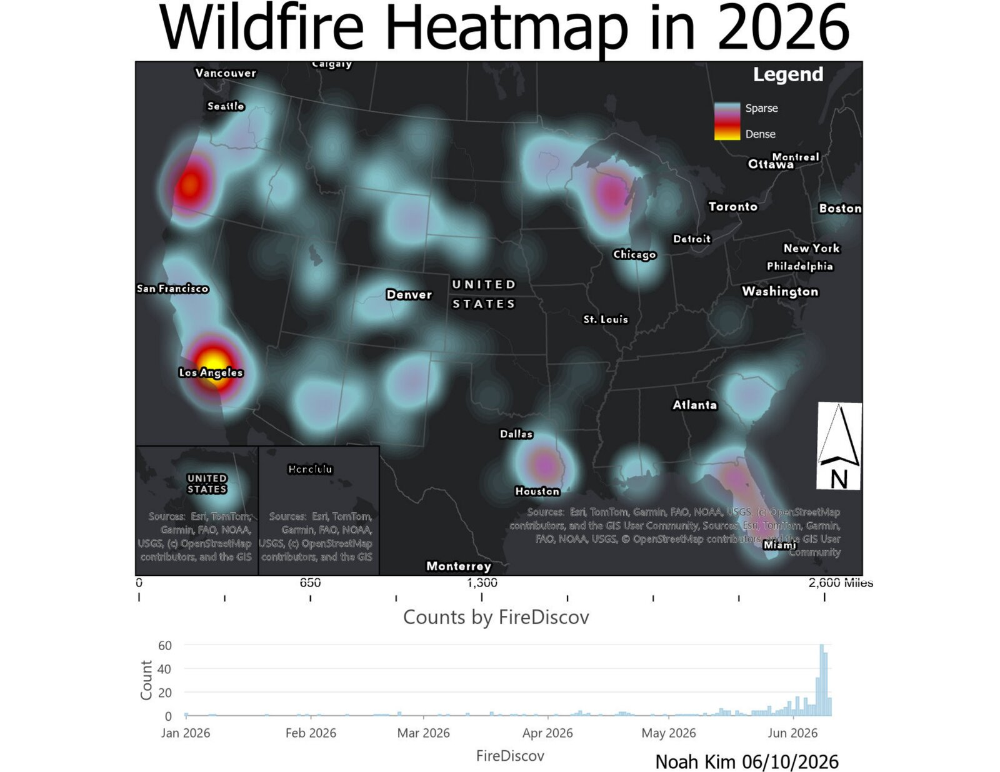

Project 1
Wildfire Heatmap, 2026
A density map of US wildfire locations from January to June 2026, paired with a daily count of fire discoveries to show both where and when fire activity concentrated.

Approach
Wildfire incident points were symbolized as a heatmap to show the density of fire starts across the contiguous US, with insets for Alaska and Hawaii. A histogram of incidents by discovery date was added to the layout to show how activity changed over time.
Results
The densest cluster of fires was in Southern California around Los Angeles, followed by western Oregon. Secondary hotspots appear in northern Wisconsin and Michigan's Upper Peninsula, East Texas, and central Florida. Over time, discoveries stayed low through spring, began climbing in mid-May, and peaked at about 60 per day in mid-June.